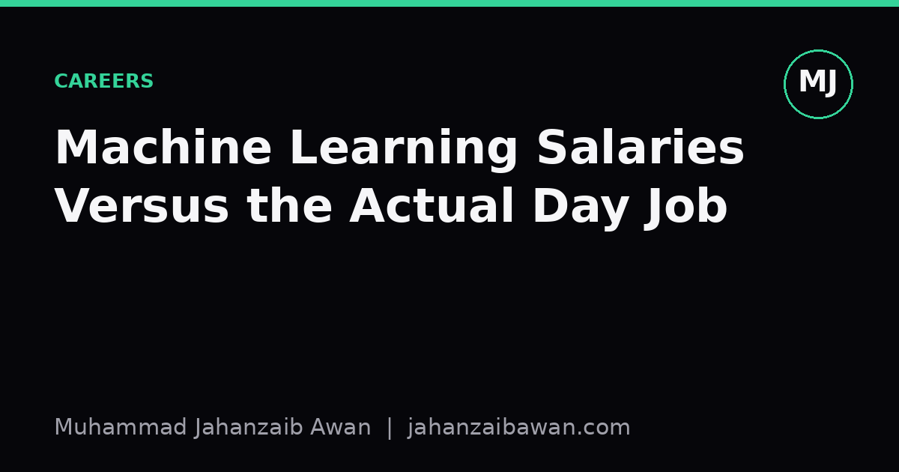

Machine Learning Salaries Versus the Actual Day Job
Job adverts promise cutting-edge models and six-figure packages; the daily reality is often data wrangling, dashboards, and defending metrics in meetings. Here is how to read between the lines.

Why the gap matters
I have read enough job adverts over the past couple of years to notice a pattern: the title says Machine Learning Engineer, the salary band looks generous, and the bullet points mention transformers, reinforcement learning, or generative AI. Then you speak to someone actually doing the job and discover that eighty per cent of their week is spent reconciling mismatched timestamps across three data sources, writing SQL, and explaining to a product manager why accuracy went down after a schema change nobody told the team about. This is not a complaint about the work itself; data wrangling and stakeholder management are legitimate skills. The issue is that the advert and the job are two different documents, and candidates who only read the first one end up disappointed, underprepared, or both.
This matters practically because salary and task description are supposed to be a contract. If a company pays a premium for someone who can build and tune models, but the actual work is eighty per cent pipeline maintenance, then either the pay is mispriced relative to the task, or the advert is mispriced relative to reality to attract a stronger applicant pool. Either way, the mismatch has consequences: high turnover when engineers realise the job is not what was promised, frustration when experienced modellers get bored doing ETL, and a widening trust gap between candidates and recruiters who keep using the same inflated language regardless of the actual role.
A worked example: decoding an advert
Take a hypothetical advert for a Machine Learning Engineer at a mid-sized retail company, offering a salary in the upper quartile for the region. The bullet points list experience with deep learning frameworks, familiarity with recommendation systems, and the chance to work on cutting-edge personalisation models. Sounds exciting. Now imagine the actual week: the team has one recommendation model that was trained eighteen months ago and rarely retrained, because nobody has ownership of the retraining pipeline. Most of the engineering effort goes into fixing broken ingestion jobs, building dashboards for the merchandising team, and occasionally tweaking a ranking heuristic that technically counts as a model but is really a weighted sum of five business rules.
None of this is dishonest exactly, but the advert emphasises the five per cent of the role that sounds impressive and omits the ninety-five per cent that pays the bills. A useful exercise is to translate each bullet point into a question for the interview. If the advert says cutting-edge personalisation models, ask how often the production model is retrained, who owns the retraining schedule, and what the last three changes to it were. If the answer is vague or the retraining cadence is measured in years rather than weeks, the cutting-edge language was aspirational rather than descriptive. If the advert mentions reinforcement learning, ask for a concrete example of a reinforcement learning system currently in production, not a research prototype from two years ago that was shelved.
Salary bands follow a similar logic. A role advertised at a high salary because it requires deep learning expertise should, in principle, require that expertise daily. If instead the deep learning requirement is used once a quarter during a proof of concept, while the daily work is SQL and dashboard maintenance, the salary is really compensating for the proof of concept risk and the broader seniority of the hire, not for continuous model-building skill. That is a legitimate thing to pay for, but it is a different thing than the advert implies, and candidates who accept the role expecting daily model work will feel misled even though nobody technically lied.
What actually predicts the daily reality
In my experience, a handful of signals predict the true shape of a role far better than the bullet points do. The first is team size and composition: a two-person data team supporting an entire retail business will spend most of its time on infrastructure and ad hoc analysis, because there is nobody else to do it. A twenty-person applied research team embedded in a mature engineering organisation is far more likely to let individuals specialise in modelling, because the surrounding infrastructure, labelling, and deployment tooling already exist. Headcount is a better predictor of daily task mix than any adjective in the job description.
The second signal is how the company talks about evaluation. If an advert or interview panel can describe, specifically, how model performance is measured in production and how that measurement feeds back into decisions, that is a sign the organisation has matured past the experimentation phase and genuinely needs modelling skill on an ongoing basis. If evaluation talk is vague, limited to offline accuracy numbers, or nobody can say when the model was last checked against live outcomes, that is a strong hint that the role will be more about getting something, anything, into production than about careful iterative improvement.
The third signal is who you would report to and what they were doing a year ago. A hiring manager who was themselves doing data engineering work twelve months earlier is likely to shape the role in that image, regardless of the advert's language, simply because that is the kind of work they understand and value. Asking directly what the manager's own day-to-day work looks like now is one of the most revealing interview questions available, and it costs nothing to ask.
Practical takeaway
Treat the salary and the job title as marketing copy, not as a specification. Before accepting a role, ask for a breakdown of how a typical week is actually spent, request concrete examples of recent modelling work that reached production, and find out how performance is measured once a model is live rather than just in a notebook. None of this guarantees the role will match your expectations perfectly, but it closes most of the gap between what the advert promises and what the first few months will actually involve. The salary might still be fair, the work might still be worthwhile, but at least you will know which job you are actually taking.